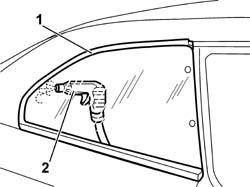

7035C04 SIDE QUATER LIGHT ONE LH OR RH ELIMINATE LEAKS
- Path
- Procedures > 70 FITTINGS > 7035 BODYSHELL WINDOWS > 7035C PASSENGER COMPARTMENT SIDE FIXED WINDOWS > 7035C04 SIDE QUATER LIGHT ONE LH OR RH ELIMINATE LEAKS
- Kind
- repair procedure (removal / refitting; the operation number is the code)
- Applies to
- all engines; all production periods
- Interactive page
- https://sloeber94.github.io/elrnDB-aGt/en/#/125001846
Applies to: all engines; all production periods
Depending on the location of the leak, remove one of the internal components covering the edge of the side window.
1. Wet with soapy water the external area where the leak occurs.
2. Blow compressed air from inside and identify the point of the leak.

Applies to: all engines; all production periods
If the leak is small, seal the relevant part from the inside and wait for the sealant to dry. Then repeat the test.
If the penetration is more extensive,
Op. 7035C14 FIXED REAR SIDE WINDOW ONE LH OR RH R R INCLUDES CLEANING OF HOUSING
Refit the removed parts.